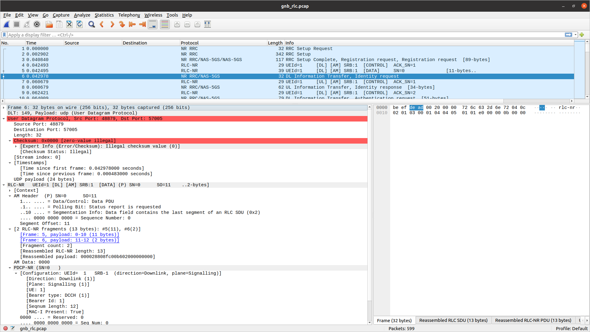
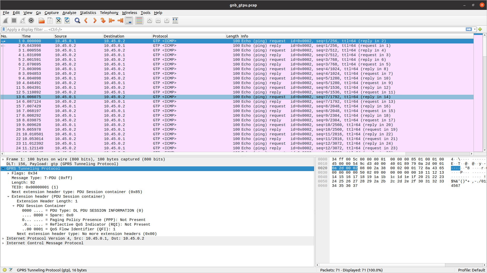
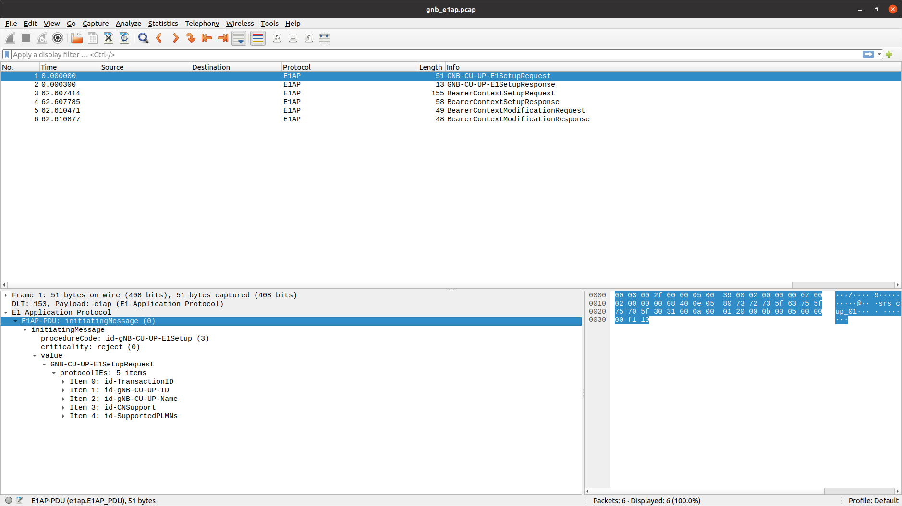
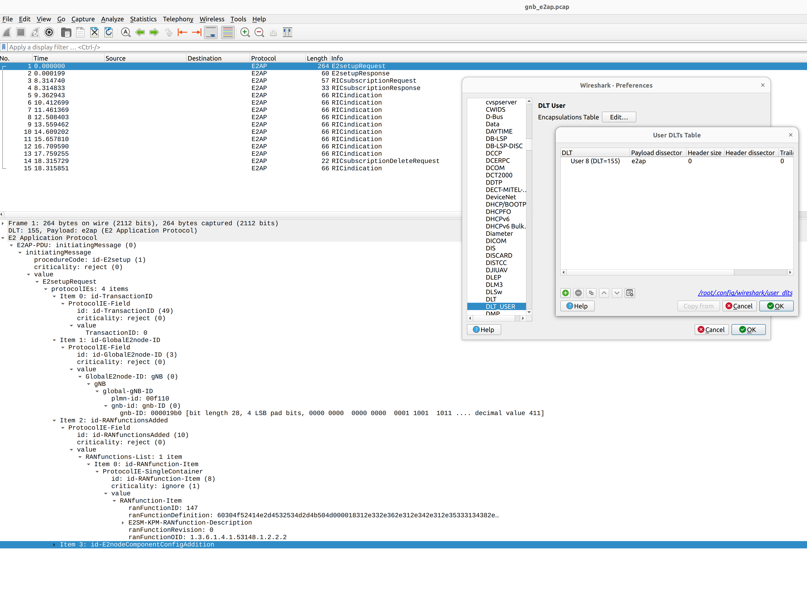

输出
日志
srsRAN Project 为用户提供了高度可配置的日志记录机制，具有每层和每组件的日志级别。在 gNB 配置中设置日志文件路径和日志级别 文件。请参阅 配置参考 了解更多详情。
所有日志消息使用的格式如下：
时间戳 [层] [级别] [TTI] 消息
字段所在位置：
时间戳位于 YYYY-MM-DDTHH:MM:SS.UUUUUU 生成日志消息的格式
层可以是其中之一 MAC/RLC/PDCP/RRC/SDAP/NGAP/GTPU/RADIO/FAPI/F1U/DU/CU/LIB。 PHY 层被指定为下行链路或上行链路，并带有执行器编号，例如 DL-PHY1.
级别可以是以下之一 电子/W/I/D 分别用于错误、警告、信息和调试。
TTI 仅针对 PHY 或 MAC 消息显示，格式为 SFN.sn 其中 SFN 是系统帧号，sn 是插槽号。
日志文件摘录示例如下：
2023-03-15T18:29:25.142200 [MAC ] [我] [ 276.14] UL 配电单元 rnti=0x4601 厄=0 子PDU: [液体=1: 伦=96, SBSR: LCG=0 废话=0, SE_PHR: 总长度=3, PAD: 伦=424]
2023-03-15T18:29:25.142204 [RLC ] [我] 厄=0 SRB1 UL: 接收 配电单元. pdu_len=96 直流电=数据 p=1 斯=满 锡=0 所以=0
2023-03-15T18:29:25.142226 [PDCP ] [我] 厄=0 SRB1 UL: 接收 配电单元. 类型=数据 pdu_len=94 锡=0 计数=0
2023-03-15T18:29:25.142228 [PDCP ] [我] 厄=0 SRB1 UL: 接收 南都大学. 计数=0
2023-03-15T18:29:25.142245 [RRC ] [D] 厄=0 SRB1 - 接收 直流信道 UL rrc安装完成 (88 乙)
2023-03-15T18:29:25.142249 [RRC ] [D] 内容: [
{
“UL-DCCH-消息”: {
“消息”: {
“c1”: {
“rrc安装完成”: {
“rrc-交易标识符”: 0,
“关键扩展”: {
“rrc安装完成”: {
“选定的PLMN-身份”: 1,
“注册AMF”: {
“amf-标识符”: "000000100000000001000000"
},
“瓜米型”: “本土”,
“专用 NAS 消息”: “7e01820be950137e004139000bf200f110020040e7000f272e04f070f0707100307e004139000bf20 0f110020040e7000f27100200402e04f070f0702f0201015200f11000000718010074000090530101"
}
}
}
}
}
}
}
]
2023-03-15T18:29:25.142253 [RRC ] [D] 厄=0 《RRC 设置程序》 完成 成功
2023-03-15T18:29:25.142263 [NGAP ] [我] 厄=0 发送 初始消息 (ran_ue_id=0)
PCAP
srsRAN Project 可以在以下层输出 PCAP：
MAC
RLC
NGAP
N3
E1AP
F1AP
E2AP
要输出这些 PCAP，必须首先在 gNB 配置文件中逐层启用它们。请参阅 配置参考 了解更多详情。
MAC
要使用 Wireshark 分析 MAC 层 PCAP，您需要为 UDP 配置用户 DLT 149 并启用 mac_nr_udp 协议：
转到编辑->首选项->协议->DLT_USER->编辑并添加 DLT=149 和有效负载协议=udp 的条目。
转到编辑->首选项->协议->DLT_USER->编辑并添加 DLT=157 和有效负载协议=mac-nr-framed 的条目。
转至分析->启用协议->MAC-NR 并启用 mac_nr_udp
转到编辑->首选项->协议->MAC-NR：启用两个复选框“尝试...”；将 LCID->DRB 映射设置为“来自配置协议”。

RLC
注意事项
要正确查看 RLC PCAP，您需要 Wireshark v4.3.x 或更高版本。
要使用 Wireshark 分析 RLC 层 PCAP，您需要为 UDP 配置用户 DLT 149 并启用 rlc_nr_udp 协议：
转到编辑->首选项->协议->DLT_USER->编辑并添加 DLT=149 和有效负载协议=udp 的条目。
转到分析->启用协议->RLC-NR 并启用 rlc_nr_udp
转到编辑->首选项->协议->RLC-NR 并根据您的需要进行配置。

NGAP
要使用 Wireshark 分析 NGAP 层 PCAP，您需要为 NGAP 配置用户 DLT 152 并启用检测和解码 5G-EA0 加密消息：
转到编辑->首选项->协议->DLT_USER->编辑并添加 DLT=152 和有效负载协议=ngap 的条目。
转到编辑->首选项->协议->NAS-5GS 并启用“尝试检测和解码 5G-EA0 加密消息”。

N3
要使用 Wireshark 分析 N3 PCAP，您需要为 GTP 配置用户 DLT 156：
转到编辑->首选项->协议->DLT_USER->编辑并添加 DLT=156 和 Payload Protocol=gtp 的条目。

E1AP
要使用 Wireshark 分析 E1AP PCAP，您需要为 E1AP 配置用户 DLT 153：
转到编辑->首选项->协议->DLT_USER->编辑并添加 DLT=153 和 Payload Protocol=e1ap 的条目。

F1AP
要使用 Wireshark 分析 F1AP PCAP，您需要为 F1AP 配置用户 DLT 154：
转到编辑->首选项->协议->DLT_USER->编辑并添加 DLT=154 和 Payload Protocol=f1ap 的条目。

E2AP
要使用 Wireshark 分析 E2AP PCAP，您需要为 E2AP 配置用户 DLT 155：
转到编辑->首选项->协议->DLT_USER->编辑并添加 DLT=155 和 Payload Protocol=e2ap 的条目。
{kind=link}

JSON 指标
srsRAN Project 支持通过 Websocket 将控制台指标报告为 JSON 数据格式。这用于生成在中看到的输出 Grafana图形用户界面.
可以接收指标并将其打印到 标准输出 使用Python脚本。
首先，可以通过将以下内容添加到配置文件来启用指标输出和远程控制：
指标:
启用_json: 真实
远程控制:
绑定地址: 0.0.0.0
港口: 8001
已启用: 真实
启用此功能后，websocket 将侦听 127.0.0.1:8001。可以订阅并写入指标 标准输出 当 gNB 使用以下 Python 代码运行时实时：
#!/usr/bin/env python3
来自 上下文库 进口 压制
进口 操作系统
进口 json
来自 时间 进口 睡觉
进口 网络套接字
定义 _打开时(WS: 网络套接字.WebSocket应用程序):
WS.发送(json.转储({“命令”: “指标_订阅”}))
定义 _on_消息(_ws: 网络套接字.WebSocket应用程序, 留言: 斯特):
与 压制(json.JSON解码错误):
公制 = json.负载(留言)
如果 “命令” 不 在 公制:
打印(json.转储(公制))
如果 __姓名__ == “__主要__”:
ws_应用程序 = 网络套接字.WebSocket应用程序(
“ws://” + 操作系统.环境[“WS_URL”],
打开时=_打开时,
消息上=_on_消息,
)
同时 ws_应用程序.永远运行(): # 连接关闭时返回False
睡觉(1)
必须通过环境变量指定websocket的地址和端口 WS_URL，例如启动脚本如下：
WS_URL="127.0.0.1:8001" ./metrics_ws_receiver.py
该脚本需要与 gNB 并行运行才能成功打印指标。指标将写入 标准输出.
您可以下载上述Python脚本的源代码 这里.
指标是按层生成的，每个层都可以通过配置文件启用。
指标:
层数: # 启用每层的指标
启用执行器: 真实 # false 禁用
启用应用程序使用情况: 真实 # false 禁用
启用_ngap: 真实 # false 禁用
启用RRC: 真实 # false 禁用
启用_e1ap: 真实 # false 禁用
启用pdcp: 真实 # false 禁用
启用_计划: 真实 # false 禁用
启用RLC: 真实 # false 禁用
启用mac: 真实 # false 禁用
启用_du_low: 真实 # false 禁用
启用_ru: 真实 # false 禁用
MAC 指标
MAC 指标封装在 DU 指标对象中，其中包含以下键：
杜：包括 DU 高指标杜高键，其中包含麦克指标，其中又包含dl指标，这是具有特定 MAC 下行链路指标的小区列表。中的每个条目dl列表对应于 DU 中配置的单元。
时间戳：生成指标的日期和时间。
其结构如下所示。
{
“都”: {
“杜高”: {
“麦克”: {
“dl”: [ # 单元格列表，每个单元格包含 MAC 指标的一项。
{
“平均延迟_us”: 45.473, “cpu_usage_percent”: 0.0045473, “最大延迟时间”: 255.174, “最小延迟_us”: 6.918, “PCI”: 1
},
{
“平均延迟_us”: 44.533, “cpu_usage_percent”: 0.0044533, “最大延迟时间”: 232.088, “最小延迟_us”: 5.822, “PCI”: 2
}
]
}
}
},
“时间戳”: “2025-11-04T15:51:26.845”
}
下表描述了 DU 指标 JSON 输出中报告的 MAC 指标，位于 dl 关键。
MAC 指标 |
描述 |
|---|---|
|
物理小区ID。 |
|
MAC 在处理插槽指示时的平均延迟（以微秒为单位）。 |
|
MAC 处理插槽指示的平均 CPU 使用率百分比。 |
|
MAC 在处理插槽指示时的最小/最大延迟（以微秒为单位）。 |
调度程序指标
调度程序指标对象包含 2 个键：
细胞：小区指标对象列表，DU 中配置的每个小区一个；该列表可通过 key 访问细胞，其结构类似如下所示：
时间戳：生成指标的日期和时间。
{
“细胞”: [ # 单元格列表，每个单元格一个度量对象。
{
“细胞指标”: {
“平均延迟”: 3,
...
},
“事件列表”: [ # 该单元格的事件列表。
{
“事件类型”: “ue_创建”,
“rnti”: 17921,
“槽”: "50.5"
},
...
],
“ue_列表”: [ # 该小区的 UE 列表及其指标。
{
“avg_ce_延迟”: 3.75,
...
}
]
},
...
],
“时间戳”: “2025-11-04T02：12：48.105”
}
的每个元素 细胞 list 包含单元格的指标，可以通过以下键访问：
细胞指标：报告给定小区的小区指标；参考 调度程序单元指标 了解详情。
事件列表：此小区指标报告中报告的事件列表。参考 细胞事件 了解详情。
ue_list：报告连接到该小区的UE列表；每个 UE 条目包含中描述的 UE 指标 调度程序 UE 指标.
调度程序单元指标
调度程序单元指标 |
描述 |
|---|---|
|
调度程序从较低层接收到的错误指示的数量。 |
|
平均/最大调度程序决策延迟（以微秒为单位）。 |
|
失败的 PDCCH 分配尝试次数。 |
|
失败的 UCI 分配尝试次数。 |
|
调度器决策延迟直方图：每个桶统计延迟在特定范围内的调度决策的数量。每个桶范围为 50 微秒，从 0 微秒到 500 微秒。 |
|
正确接收/解码 (CRC=OK)/未正确接收/解码 (CRC=KO) 的 MSG3 数量。 |
|
时隙中的平均 PRACH 延迟：它测量 PHY 层接收 PRACH 时隙与 PRACH 指示到达调度器时隙之间的时间。值为 空 如果在测量期间没有收到PRACH。 |
|
由于 HARQ 延迟而导致的 PDSCH 分配失败的数量。 |
|
由于 HARQ 延迟而导致的 PUSCH 分配失败的数量。 |
|
用于 PUCCH 授权的每个 UL 时隙的 RB 平均数量。 |
|
用于 PUSCH 授权的每个时隙 RB 数量的总和。数组中的每个条目对应于一个 TDD 插槽索引。 |
|
用于 PDSCH 授权的每个时隙 RB 数量的总和。数组中的每个条目对应于一个 TDD 插槽索引。 |
|
此单元指标报告中报告的 UE 指标列表。参考 调度程序 UE 指标 了解详情。 |
细胞事件
公制 |
描述 |
|---|---|
|
可能发生的事件有： ue_create 对于 UE 的创作， ue_reconf 对于 UE 重新配置， ue_rem 用于 UE 移除。 |
|
发生事件的 UE 的 RNTI。 |
|
调度程序中完成创建/重新配置/删除过程的时隙。 |
调度程序 UE 指标
公制 |
描述 |
|---|---|
|
UE在DU中的索引为这个UE。 |
|
物理小区 ID。 |
|
目前该 UE 使用 C-RNTI。 |
|
平均信道质量指标。 |
|
平均下行链路等级指标。 |
|
平均上行链路等级指示器。 |
|
用于 DL 授权的平均 MCS 指数。 |
|
考虑到收到肯定 HARQ-ACK 的已分配 MAC DL PDU 的大小，体验 MAC DL 比特率（以 kbps 为单位）。 |
|
收到的肯定 DL HARQ-ACK 的数量。 |
|
检测到的 DL HARQ NACK 或 DL HARQ-ACK 误检测的数量。 |
|
所有逻辑通道的最后 DL 缓冲区占用率报告的总和。 |
|
为 PUSCH 估计的 SNR（以 dB 为单位）。 |
|
针对 PUSCH 估计的 RSRP（以 dB 为单位）。 |
|
针对 PUCCH 估计的 SNR（以 dB 为单位）。 |
|
平均定时提前（以纳秒为单位）：它包括所有 UL 授权的 TA 偏移量。 |
|
平均定时提前（以纳秒为单位）：它仅包括 PUSCH 授权的 TA 偏移。 |
|
平均定时提前（以纳秒为单位）：它仅包括 PUCCH 授权的 TA 偏移。 |
|
平均时间提前（以纳秒为单位）：它仅包括 SRS 授权的 TA 偏移量。 |
|
用于 UL 授权的平均 MCS 指数。 |
|
考虑到解码相应 CRC 的已分配 MAC UL PDU 的大小，体验 MAC UL 比特率（以 kbps 为单位）。 |
|
已正确解码的 PUSCH 授权数量 (CRC=OK)。 |
|
无法解码的 PUSCH 授权数量 (CRC=KO)。 |
|
报告的最后 PHR 值。 |
|
分配给该 UE 的 2 个连续 PUSCH 之间的时隙最大间隔。 |
|
分配给该 UE 的 2 个连续 PDSCH 之间的时隙最大间隔。 |
|
所有逻辑通道组的最后 UL 缓冲区状态报告 (BSR) 的总和。 |
|
在 PUCCH 格式 0 和 1 上检测到的携带 HARQ-ACK 比特的无效 UCI 数量。 |
|
在 PUCCH 格式 2、3 和 4 上检测到的携带 HARQ-ACK 比特的无效 UCI 数量。 |
|
在 PUCCH 格式 2、3 和 4 上检测到的无效 UCI 携带比特 CSI 的数量。 |
|
在 PUSCH 上检测到的携带 HARQ-ACK 比特的无效 UCI 数量。 |
|
在 PUSCH 上检测到的携带 CSI 比特的无效 UCI 数量。 |
|
平均/最大 MAC CE 解码延迟（以毫秒为单位）：测量接收到携带 MAC CE 的 MAC PDU 时隙与完成 MAC CE 处理时隙之间的时间。 |
|
平均/最大 CRC 解码延迟（以毫秒为单位）：测量接收到携带 PUSCH 的 MAC PDU 时隙与完成 PUSCH 处理时隙之间的时间。 |
|
平均/最大 PUSCH HARQ 延迟（以毫秒为单位）：它测量接收 PUSCH 时隙与完成承载用于该 PUSCH 解码的 HARQ-ACK 比特的 UCI 时隙之间的时间。 |
|
平均/最大 PUCCH HARQ 延迟（以毫秒为单位）：它测量接收 PUCCH 时的时隙与完成承载用于该 PUCCH 解码的 HARQ-ACK 比特的 UCI 时隙之间的时间。 |
|
平均/最大 SR 到 PUSCH 延迟（以毫秒为单位）：它测量接收 SR 时隙与为此 UE 分配第一个 PUSCH（SR 之后）时隙之间的时间。 |
OFH指标
结构化 OFH 指标如下所示：
{
“时间戳”: “2025-11-04T15:51:26.845”,
“茹”: {
“的”: {
“计时统计”: {
“nof_skipped_symbols”: 0,
“skipped_symbols_max_burst”: 0
},
“细胞”: [
{
“PCI”: 0,
“乌尔”: {
“收到的数据包”: {
“总计”: 0,
“早”: 0,
“准时”: 0,
“迟到”: 0,
“earliest_msg_us”: 0.0,
“最新消息我们”: 0.0
},
“以太网接收器”: {
“平均吞吐量_mbps”: 0.0,
“平均延迟_us”: 0.0,
“最大延迟时间”: 0.0,
“cpu_usage_percent”: 0.0
},
“消息解码器”: {
“普拉赫”: {
“nof_dropped_messages”: 0,
“平均延迟_us”: 0.0,
“最大延迟时间”: 0.0,
“cpu_usage_percent”: 0.0
},
“数据”: {
“nof_dropped_messages”: 0,
“平均延迟_us”: 0.0,
“最大延迟时间”: 0.0,
“cpu_usage_percent”: 0.0
},
“ECPRI”: {
“nof_future_seqid_messages”: 0,
“nof_past_seqid_messages”: 0
}
},
“rx_window_stats”: {
“nof_missed_uplink_symbols”: 0,
“nof_missed_prach_occasions”: 0
}
},
“dl”: {
“以太网发送器”: {
“平均吞吐量_mbps”: 0.0,
“平均延迟_us”: 0.0,
“最大延迟时间”: 0.0,
“cpu_usage_percent”: 0.0
},
“消息编码器”: {
“dl_cp”: {
“平均延迟_us”: 0,
“最大延迟时间”: 0,
“cpu_usage_percent”: 0
},
“ul_cp”: {
“平均延迟_us”: 0,
“最大延迟时间”: 0,
“cpu_usage_percent”: 0
},
“dl_up”: {
“平均延迟_us”: 0,
“最大延迟时间”: 0,
“cpu_usage_percent”: 0
},
},
“消息发送者”: {
“平均延迟_us”: 0,
“最大延迟时间”: 0,
“cpu_usage_percent”: 0
},
“发射机统计”: {
“late_dl_slots”: 0,
“late_ul_slot_requests”: 0,
“late_cp_dl_messages”: 0,
“late_up_dl_messages”: 0,
“late_cp_ul_messages”: 0
}
}
}
]
}
}
}
OFH 指标分为以下部分：
计时统计代表时序统计。细胞表示单元格指标列表。
的 计时统计 指标如下表所示：
OFH Timing_stats 指标 |
描述 |
|---|---|
|
计时工作者起晚时跳过的符号数。 |
|
突发中跳过的符号的最大数量。 |
单元格由三个元素组成，如下表所示：
OFH 细胞指标 |
描述 |
|---|---|
|
物理小区标识符（3GPP TS 38.331 中描述）。支持 [0 - 1007]。 |
|
保存给定小区的上行链路指标的对象。 |
|
保存给定小区下行链路指标的对象。 |
上行链路指标由以下部分组成：
收到的数据包以太网接收器消息解码器rx_window_stats
下表描述了上行链路的已接收数据包指标：
OFH 上行链路小区收到的数据包指标 |
描述 |
|---|---|
|
接收到的数据包总数。 |
|
提前收到的 OFH 数据包数量。 |
|
按时收到的 OFH 数据包数量。 |
|
延迟收到的 OFH 数据包数量。 |
|
最早收到的数据包（以微秒为单位）。 |
|
最近收到的数据包（以微秒为单位）。 |
下表描述了上行链路的以太网接收器指标：
OFH 单元以太网接收器指标 |
描述 |
|---|---|
|
指标周期内的平均接收吞吐量以每秒兆位表示。 |
|
数据包接收的平均延迟（以微秒为单位）。 |
|
数据包接收的最大延迟（以微秒为单位）。 |
|
CPU 使用率（以以太网接收器的百分比表示）。 |
上行链路消息解码器度量由以下部分构成：
普拉赫数据埃普里
上行消息解码器的 PRACH 度量如下表所示：
OFH小区PRACH消息解码器度量 |
描述 |
|---|---|
|
丢弃的PRACH消息数。 |
|
PRACH消息解码的平均延迟。 |
|
PRACH消息解码的最大延迟。 |
|
PRACH 消息解码百分比中的 CPU 使用率。 |
上行链路消息解码器的数据度量如下表所示：
OFH 单元数据消息解码器指标 |
描述 |
|---|---|
|
丢弃的数据消息数。 |
|
接收到的数据消息的平均解码延迟。 |
|
接收到的数据消息的最大解码延迟。 |
|
CPU 使用率（以数据流的百分比表示）。 |
上行链路消息解码器的 eCPRI 指标如下表所示：
OFH 上行链路小区消息解码器 eCPRI 指标 |
描述 |
|---|---|
|
eCPRI 跳过的消息数。 |
|
eCPRI 丢弃的消息数。 |
上行链路的接收器窗口统计指标如下表所示：
OFH 上行链路小区接收窗口统计指标 |
描述 |
|---|---|
|
在预期接收窗口内未完全接收的请求上行链路符号的数量。 |
|
在预期接收窗口内未完全接收的 PRACH 数量。 |
下行链路指标由以下部分组成：
以太网发送器消息编码器消息发送者发射器统计
下表描述了下行链路的以太网发射机指标：
OFH 单元以太网发射器指标 |
描述 |
|---|---|
|
指标周期内的平均传输吞吐量以每秒兆位表示。 |
|
数据包传输的平均延迟（以微秒为单位）。 |
|
数据包传输的最大延迟（以微秒为单位）。 |
|
CPU 使用率（以以太网发送器的百分比表示）。 |
下行链路消息编码器度量由以下部分构成：
dl_cpul_cpdl_up
下表描述了消息编码器下行链路控制平面指标：
OFH 小区下行链路控制平面消息编码器指标 |
描述 |
|---|---|
|
下行链路控制平面处理的平均延迟（以微秒为单位）。 |
|
下行链路控制平面处理的最大延迟（以微秒为单位）。 |
|
CPU 使用率（以下行链路控制平面处理的百分比表示）。 |
下表描述了消息编码器上行链路控制平面指标：
OFH 小区上行链路控制平面消息编码器指标 |
描述 |
|---|---|
|
上行链路控制平面处理的平均延迟（以微秒为单位）。 |
|
上行链路控制平面处理的最大延迟（以微秒为单位）。 |
|
CPU 使用率（以上行链路控制平面处理的百分比表示）。 |
消息编码器下行链路用户平面指标如下表所述：
OFH 小区下行链路用户平面消息编码器指标 |
描述 |
|---|---|
|
下行链路用户平面处理的平均延迟（以微秒为单位）。 |
|
下行链路用户平面处理的最大延迟（以微秒为单位）。 |
|
CPU 使用率（以下行链路用户平面处理的百分比表示）。 |
下行链路的消息发送器指标如下表所述：
OFH 小区消息发送器指标 |
描述 |
|---|---|
|
在每个符号边界执行的消息处理（包括以太网传输）的平均延迟。 |
|
在每个符号边界执行的消息处理（包括以太网传输）的最大延迟。 |
|
CPU 使用率（以消息发送器的百分比表示）。 |
下行链路的发送器统计信息如下表所示：
OFH 下行链路小区发射机统计指标 |
描述 |
|---|---|
|
从 PHY 接收到的后期下行链路资源网格的数量。 |
|
延迟上行请求的数量。 |
|
迟到的控制平面下行链路消息的数量，即未传输的消息。 |
|
迟到的用户平面下行链路消息的数量，即未传输的消息。 |
|
迟到的控制平面上行链路消息（即未传输的消息）的数量。 |
NGAP 指标
NGAP 指标封装在 CU-CP 指标对象中，其中包含以下键：
铜-CP：包括 CU-CP ID 下编号关键，NGAP 指标下NGAP键，以及 RRC 指标资源管理中心关键。
时间戳：生成指标的日期和时间。
其结构如下所示。
{
“铜-cp”: {
“身份证”: “srs-cu-cp”,
“n差距”: {
“恩加普”: [ # 连接的 AMF 的 NGAP 实例列表。
...
],
“nof_handover_preparations_requested”: 0,
“nof_successful_handover_preparations”: 0
},
“RRC”: {
“都”: [ # 连接的 DU 的 RRC 实例列表。
...
],
“nof_handover_executions_requested”: 0,
“nof_successful_handover_executions”: 0
}
},
“时间戳”: “2025-11-04T15:51:26.845”
}
NGAP 指标的结构如下所示。
{
“n差距”: {
“恩加普”: [
{
“amf_名称”: “open5gs-amf0”,
“已连接”: 真实,
“寻呼测量”: {
“nof_cn_initated_paging_requests”: 0
},
“pdu_会话_管理”: {
“nof_pdu_sessions_failed_to_setup”: {
“misc-ctrl_processing_overload”: 0,
“misc-硬件失败”: 0,
“misc-not_enough_user_plane_processing_res”: 0,
“misc-om_干预”: 0,
“misc-unknown_plmn_or_sn_pn”: 0,
“nas-authentication_fail”: 0,
“nas-注销”: 0,
“nas-正常_释放”: 0,
“nas-未指定”: 0,
“协议-abstract_syntax_error_falsely_constructed_msg”: 0,
“协议-abstract_syntax_error_ignore_and_notify”: 0,
“协议抽象_语法_错误_拒绝”: 0,
“协议-msg_not_兼容_with_receiver_state”: 0,
“协议语义错误”: 0,
“协议传输语法错误”: 0,
“协议未指定”: 0,
“无线电网络-cag_only_access_denied”: 0,
“无线电网络-小区不可用”: 0,
“无线电网络加密和或完整性保护算法不支持”: 0,
“radio_network-fail_in_radio_interface_proc”: 0,
“无线电网络-ho_取消”: 0,
“无线电网络-ho_desirable_for_radio_reason”: 0,
“radio_network-ho_fail_in_target_5_gc_ngran_node_or_target_sys”: 0,
“无线电网络-ho_target_not_allowed”: 0,
“radio_network-ims_voice_eps_fallback_or_rat_fallback_triggered”: 0,
“无线电网络-不一致的远程_ue_ngap_id”: 0,
“无线电网络-会话的切片信息不一致”: 0,
“无线电网络指示_mbs_session_area_info_not_served_by_the_gnb”: 0,
“radio_network-insufficient_ue_cap”: 0,
“radio_network-interaction_with_other_proc”: 0,
“无线电网络-无效的qos_组合”: 0,
“radio_network-misaligned_assoc_for_multicast_unicast”: 0,
“无线电网络-多个位置报告_ref_id_实例”: 0,
“radio_network-multiple_pdu_session_id_instances”: 0,
“radio_network-multiple_qos_flow_id_instances”: 0,
“radio_network-n26_interface_not_available”: 0,
“无线电网络-ng_inter_sys_ho_triggered”: 0,
“radio_network-ng_intra_sys_ho_triggered”: 0,
“radio_network-no_radio_res_available_in_target_cell”: 0,
“radio_network-not_supported_5qi_value”: 0,
“无线电网络-npn_access_denied”: 0,
“无线电网络-partial_ho”: 0,
“radio_network-radio_conn_with_ue_lost”: 0,
“radio_network-radio_res_not_available”: 0,
“radio_network-redcap_ue_not_supported”: 0,
“无线电网络重定向”: 0,
“radio_network-reduce_load_in_serving_cell”: 0,
“radio_network-release_due_to_5gc_ generated_reason”: 0,
“radio_network-release_due_to_cn_Detected_mob”: 0,
“radio_network-release_due_to_ngran_ generated_reason”: 0,
“无线电网络释放_due_to_pre_emption”: 0,
“无线电网络-res_not_available_for_the_slice”: 0,
“无线电网络-res_optim_ho”: 0,
“radio_network-rsn_not_available_for_the_up”: 0,
“无线电网络切片不支持”: 0,
“无线电网络-成功_ho”: 0,
“无线电网络时间暴击ho”: 0,
“无线电网络-tngrelocoverall_expiry”: 0,
“radio_network-tngrelocprep_expiry”: 0,
“radio_network-txnrelocoverall_expiry”: 0,
“radio_network-ue_context_transfer”: 0,
“radio_network-ue_in_rrc_inactive_state_not_reachable”: 0,
“radio_network-ue_max_integrity_protected_data_rate_reason”: 0,
“无线电网络-未知_本地_ue_ngap_id”: 0,
“无线电网络-未知_mbs_会话_id”: 0,
“radio_network-unknown_pdu_session_id”: 0,
“无线电网络-未知目标_id”: 0,
“radio_network-unknown_qos_flow_id”: 0,
“无线电网络-未指定”: 0,
“radio_network-up_confidentiality_protection_not_possible”: 0,
“radio_network-up_integrity_protection_not_possible”: 0,
“无线电网络用户不活动”: 0,
“无线电网络-xn_ho_触发”: 0,
“运输-运输_res_不可用”: 0,
“运输未指定”: 0
},
“nof_pdu_sessions_requested_to_setup”: 1,
“nof_pdu_sessions_successively_setup”: 1,
“s-nssai”: “（sst = 1 sd = na）”
},
“支持的_plmns”: "[ 00101, 99902, ]"
}
],
“nof_handover_preparations_requested”: 0,
“nof_successful_handover_preparations”: 0
}
}
下表描述了 CU-CP 指标 JSON 输出中报告的 NGAP 指标，位于 NGAP 关键。
NGAP 指标 |
描述 |
|---|---|
|
连接的 AMF 的 NGAP 实例列表。 |
|
请求的切换准备数量，参见 TS 128.552 第 5.1.3.7.1.1 节。 |
|
成功切换准备的次数，参见 TS 128.552 第 5.1.3.7.1.2 节。 |
的 恩加普 list 包含每个连接的 AMF 一个对象，其结构如下所示。
NGAP 指标 |
描述 |
|---|---|
|
相关 AMF 的名称。 |
|
AMF 连接状态。 |
|
包含 CN 发起的寻呼请求的数量，请参阅 TS 128.552 第 5.1.1.27.1 节。 |
|
|
|
包含 AMF 支持的 PLMN 列表。 |
RRC 指标
RRC 指标封装在 CU-CP 指标对象中，其中包含以下键：
铜-CP：包括 CU-CP ID 下编号关键，NGAP 指标下NGAP键，以及 RRC 指标资源管理中心关键。
时间戳：生成指标的日期和时间。
其结构如下所示。
{
“铜-cp”: {
“身份证”: “srs-cu-cp”,
“n差距”: {
“恩加普”: [ # 连接的 AMF 的 NGAP 实例列表。
...
],
“nof_handover_preparations_requested”: 0,
“nof_successful_handover_preparations”: 0
},
“RRC”: {
“都”: [ # 连接的 DU 的 RRC 实例列表。
...
],
“nof_handover_executions_requested”: 0,
“nof_successful_handover_executions”: 0
}
},
“时间戳”: “2025-11-04T15:51:26.845”
}
RRC 指标的结构如下所示。
{
“RRC”: {
“都”: [
{
“gnb_du_id”: 0,
“rrc_连接_建立”: {
“尝试的_rrc_连接_建立”: {
“紧急”: 0,
“高优先级访问”: 0,
“mcs_prio_access”: 0,
“mo_数据”: 0,
“mo_sig”: 1,
“mo_短信”: 0,
“mo_video_call”: 0,
“mo_voice_call”: 0,
“mps_prio_access”: 0,
“mt_访问”: 0,
“未知”: 0
},
“成功_rrc_连接_建立”: {
“紧急”: 0,
“高优先级访问”: 0,
“mcs_prio_access”: 0,
“mo_数据”: 0,
“mo_sig”: 1,
“mo_短信”: 0,
“mo_video_call”: 0,
“mo_voice_call”: 0,
“mps_prio_access”: 0,
“mt_访问”: 0,
“未知”: 0
}
},
“rrc_连接_编号”: {
“max_nof_inactive_rrc_connections”: 0,
“最大nof_rrc_连接”: 1,
“mean_nof_inactive_rrc_connections”: 0,
“平均nof_rrc_连接”: 1
},
“rrc_连接_重建”: {
“尝试_rrc_连接_重建”: 0,
“成功的_rrc_连接_重建_with_ue_context”: 0,
“成功的_rrc_连接_重建_没有_ue_context”: 0
},
“rrc_连接_恢复”: {
“attempted_rrc_connection_resumes”: {
“紧急”: 0,
“高优先级访问”: 0,
“mcs_prio_access”: 0,
“mo_数据”: 0,
“mo_sig”: 0,
“mo_短信”: 0,
“mo_video_call”: 0,
“mo_voice_call”: 0,
“mps_prio_access”: 0,
“mt_访问”: 0,
“未知”: 0
},
“attempted_rrc_connection_resumes_followed_by_rrc_setup”: {
“紧急”: 0,
“高优先级访问”: 0,
“mcs_prio_access”: 0,
“mo_数据”: 0,
“mo_sig”: 0,
“mo_短信”: 0,
“mo_video_call”: 0,
“mo_voice_call”: 0,
“mps_prio_access”: 0,
“mt_访问”: 0,
“未知”: 0
},
“rrc_connection_resumes_followed_by_network_release”: {
“紧急”: 0,
“高优先级访问”: 0,
“mcs_prio_access”: 0,
“mo_数据”: 0,
“mo_sig”: 0,
“mo_短信”: 0,
“mo_video_call”: 0,
“mo_voice_call”: 0,
“mps_prio_access”: 0,
“mt_访问”: 0,
“未知”: 0
},
“成功_rrc_连接_恢复”: {
“紧急”: 0,
“高优先级访问”: 0,
“mcs_prio_access”: 0,
“mo_数据”: 0,
“mo_sig”: 0,
“mo_短信”: 0,
“mo_video_call”: 0,
“mo_voice_call”: 0,
“mps_prio_access”: 0,
“mt_访问”: 0,
“未知”: 0
},
“成功_rrc_连接_恢复_with_fallback”: {
“紧急”: 0,
“高优先级访问”: 0,
“mcs_prio_access”: 0,
“mo_数据”: 0,
“mo_sig”: 0,
“mo_短信”: 0,
“mo_video_call”: 0,
“mo_voice_call”: 0,
“mps_prio_access”: 0,
“mt_访问”: 0,
“未知”: 0
}
}
}
],
“nof_handover_executions_requested”: 0,
“nof_successful_handover_executions”: 0
}
}
下表描述了 CU-CP 指标 JSON 输出中报告的 RRC 指标，位于 资源管理中心 关键。
RRC 指标 |
描述 |
|---|---|
|
连接的 DU 的 RRC 实例列表。 |
|
请求的切换执行次数，请参见 TS 128.552 第 5.1.1.6.2.1 节。 |
|
成功切换执行的次数，请参见 TS 128.552 第 5.1.1.6.2.2 节。 |
的 杜 列表包含每个连接的 DU 一个对象，其结构如下所示。
RRC 指标 |
描述 |
|---|---|
|
相关DU的ID。 |
|
|
|
|
|
|
|
|
执行者指标
结构化执行器指标如下所示：
{
“时间戳”: “2025-11-04T15:51:26.845”,
“执行者指标”: {
“名字”: "",
“nof_执行”: 0,
“nof_defers”: 0,
“入队平均”: 0,
“入队最大”: 0,
“任务平均”: 0,
“任务最大”: 0,
“CPU负载”: 0,
“nof_vol_ctxt_switch”: 0,
“nof_invol_ctxt_switch”: 0.0
}
}
下表描述了执行程序指标。
执行者指标 |
描述 |
|---|---|
|
执行人姓名。 |
|
执行器运行任务的次数。 |
|
任务执行被推迟的次数。 |
|
平均任务排队延迟（以微秒为单位）。 |
|
最大任务排队延迟（以微秒为单位）。 |
|
平均任务持续时间（以微秒为单位）。 |
|
最大任务持续时间（以微秒为单位）。 |
|
执行器的平均CPU使用率。 |
|
报告期内自愿上下文切换的次数。 |
|
报告期内非自愿上下文切换的次数。 |
应用程序资源使用指标
结构化应用程序资源使用指标如下所示：
{
“时间戳”: “2025-11-04T15:51:26.845”,
“应用程序资源使用情况”: {
“cpu_usage_percent”: 0,
“内存使用情况_mb”: 0,
“功耗_瓦”: 0
}
}
下表描述了应用程序资源使用指标。
应用程序资源使用指标 |
描述 |
|---|---|
|
应用程序的 CPU 使用率（百分比）。它可以超过 100%，表明有多少个 CPU 核心被使用。 |
|
应用程序的内存消耗（以兆字节为单位）。 |
|
运行应用程序时测量的 CPU 封装功耗（以瓦特为单位）。 |